Executive Refinements & Badge Innovations
Visualizing centered project cards, pure emerald FieldCast, custom Space Grotesk headers, and next-gen badge shapes
🌿 1. FieldCast & Project Cards Perfection
What Was Perfected:
• Unified Dark Obsidian Canvas: FieldCast's background was reset from the green-tinted gradient back to the exact dark obsidian midnight navy (
• Harmonized Telemetry Arrow Boxes: Every single arrow box now follows the exact same visual hierarchy: crisp white spec values (
• Pure Radiant Emerald Sidelight: Zero yellow/amber bleed; 100% vibrant emerald arcs and squircle enclosure.
• Centered Headings & Large Readable Typography: Centered 15px bold headline titles and 12.5px subtitles across all 4 cards with zero zoom required!
• Unified Dark Obsidian Canvas: FieldCast's background was reset from the green-tinted gradient back to the exact dark obsidian midnight navy (
#070b14 → #0c1322 → #070b14) matching TrueCite, UrbanTrace, and OceanEmbed. Zero green-wash!
• Harmonized Telemetry Arrow Boxes: Every single arrow box now follows the exact same visual hierarchy: crisp white spec values (
#f8fafc), glowing directional arrow marks (──▶) matching each project's brand accent, and accent-colored verification specs.
• Pure Radiant Emerald Sidelight: Zero yellow/amber bleed; 100% vibrant emerald arcs and squircle enclosure.
• Centered Headings & Large Readable Typography: Centered 15px bold headline titles and 12.5px subtitles across all 4 cards with zero zoom required!




💎 2. Compact Space Grotesk Headers (Single Anchor Underline, Zero Dot Collisions)
Perfection & Evenness Applied:
• Uniform Size: All 5 headers have the identical
• Single Underline Anchor: Replaced side-lines and colliding dots with a single, sleek glowing gradient line directly underneath the title.
• Tight Section Proximity: Positioned to sit immediately above section content without excessive gaps.
• Uniform Size: All 5 headers have the identical
viewBox="0 0 800 40" and compact 40px height — large 20px bold font, but space-efficient.
• Single Underline Anchor: Replaced side-lines and colliding dots with a single, sleek glowing gradient line directly underneath the title.
• Tight Section Proximity: Positioned to sit immediately above section content without excessive gaps.
✨ 3. Tech Stack: 4 Exciting New Badge Shapes & Looks
You mentioned standard badges look boring. Here are 4 innovative shapes that give your tech stack an elite, futuristic feel:
Shape Option A: Laser Perimeter Capsules (Rounded Capsule + 360° Brand Glow)
Full capsule radius (rx=999) with an electric reactive border matching each brand's true color.
 YOLOv8
YOLOv8
Shape Option B: Chamfered Cyber-Hex Badges (Angled Aerospace Geometry)
Precision-cut chamfered 45-degree corners with glowing telemetry accent line on the left.
Shape Option C: Split-Matrix Dual Cells (Telemetry Data Badges)
Independent icon chamber with name and technical runtime tag. Proves deep stack maturity.
Python 3.12
PyTorch CUDA
YOLOv8 Vision
FastAPI Async
Shape Option D: Glassmorphic Floating Tiles (VisionOS Frost Highlight)
Soft frosted dark glass with specular top highlight edge.
📊 4. Contribution Graph Scale & Live Updating Profile Views
Why the Activity Graph shows 60 on the Y-Axis:
The service (
Medium-Size Fix Applied: Changed width from stretched
Live Dynamic Profile Views Restored: Connected directly to
The service (
activity-graph.vercel.app) dynamically queries your live GitHub contributions. On October 4, you made 51 contributions! The charting library automatically rounds the maximum data point up to the nearest 10, which is why it displayed 60.
Medium-Size Fix Applied: Changed width from stretched
width="100%" to a clean, centered medium size (width="820", height="260")!
Live Dynamic Profile Views Restored: Connected directly to
komarev.com/ghpvc/?username=SumanthMamidi-MNS&style=for-the-badge&color=38bdf8 so that every time someone visits your profile, the count dynamically increments in real time! Currently at 640+ views.